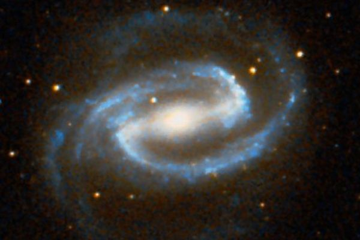

Латинское название: Eridanus
Эридан - мифическая река и, соответственно, бог этой реки, сын Океана и Тефиды. Но на небе - именно река, а не бог.
Где находилась эта река, положительно не известно! Вообще, обычно Эридан считали северным потоком, впадающим в Океан на севере Ойкумены. Возможно, это был своеобразный контрапункт южного Нила. Иногда Эридан даже считали, собственно, северной дугой реки Океана. (Океан у греков - это река, омывающая весь сухопутный мир, Ойкумену. Река, кстати говоря, пресная!)
В любом случае, в Эридан упал поверженный Фаэтон.
Эридан был известен янтарем, который, между прочим, то ли слёзы Аполлона по сыну Асклепию (за это аполлоново горевание и в его утешение и поднят на небо), то ли Гелиад, сестёр Фаэтона, по брату, что коррелирует с приведенной легендой. Гелиады, томившие своим ревом Зевса, тоже были им превращены - но не в созвездие, а в деревья, в тополя, чья смола и стала янтарем. Или в плакучие ивы, по другой версии.
Большая и красивая спиральная галактика с перемычкой. Одна из наиболее подробно сфотографированных.
Вообще, войд (void) - огромная область вселенной метагалактического масштаба, свободная от галактик, "пустая". Дело в том, что галактики и их скопления разного размера и масштаба распространены в пространстве не равномерно, а собираются в "слои" или "стенки" разной толщины, подобно пенной структуре с крупными, пустыми внутри, пузырями-ячейками. Области между стенками свободны от галактик. Они и называются войдами.
В Эридане находится один из крупнейших известных астрономам войдов, который за размер даже называют "супервойд".